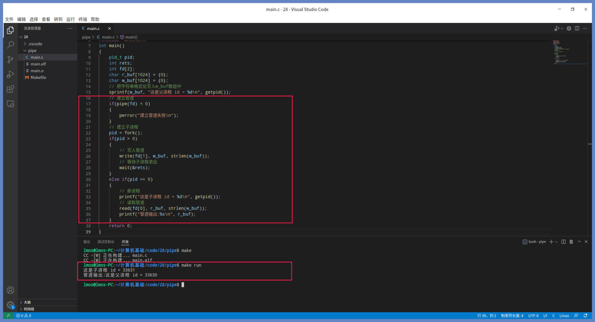
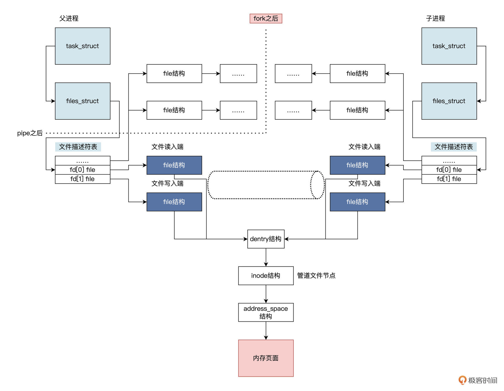
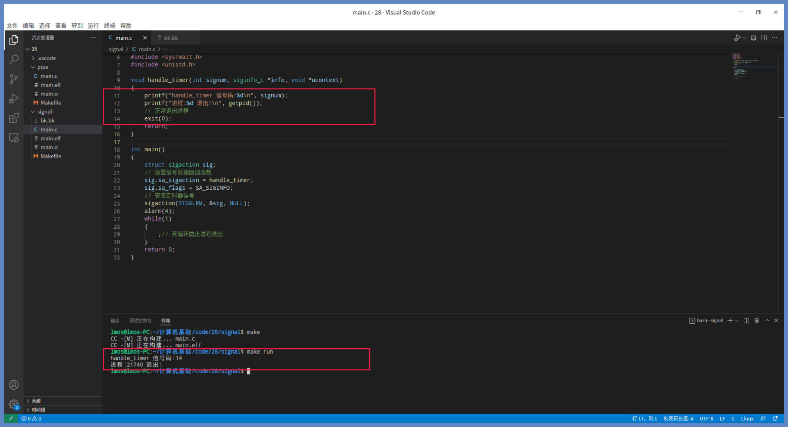
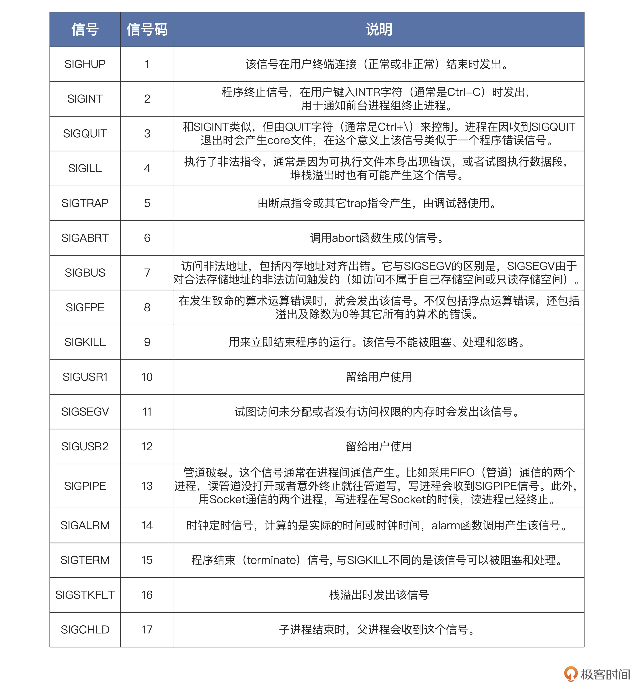
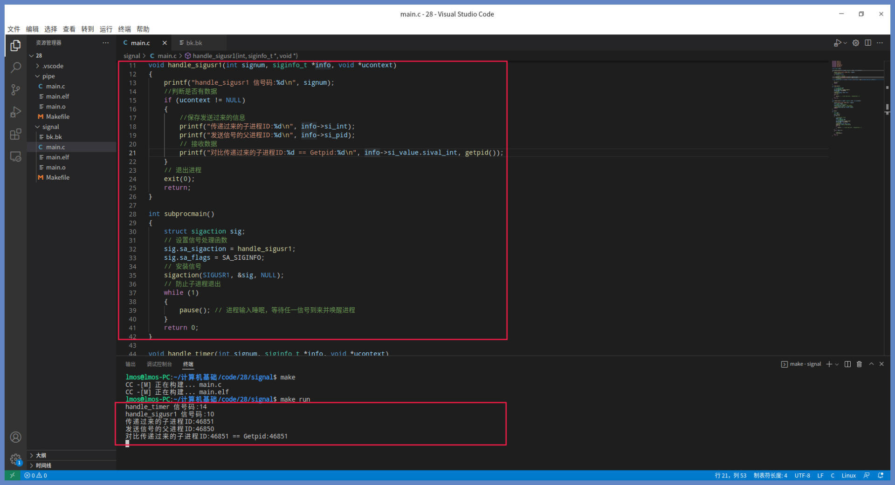
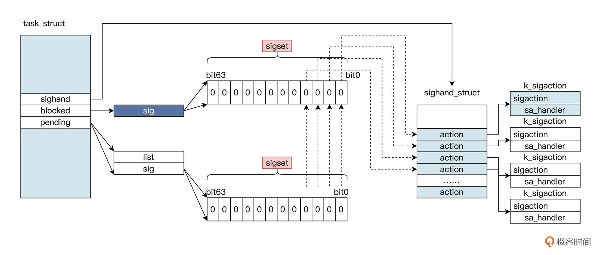
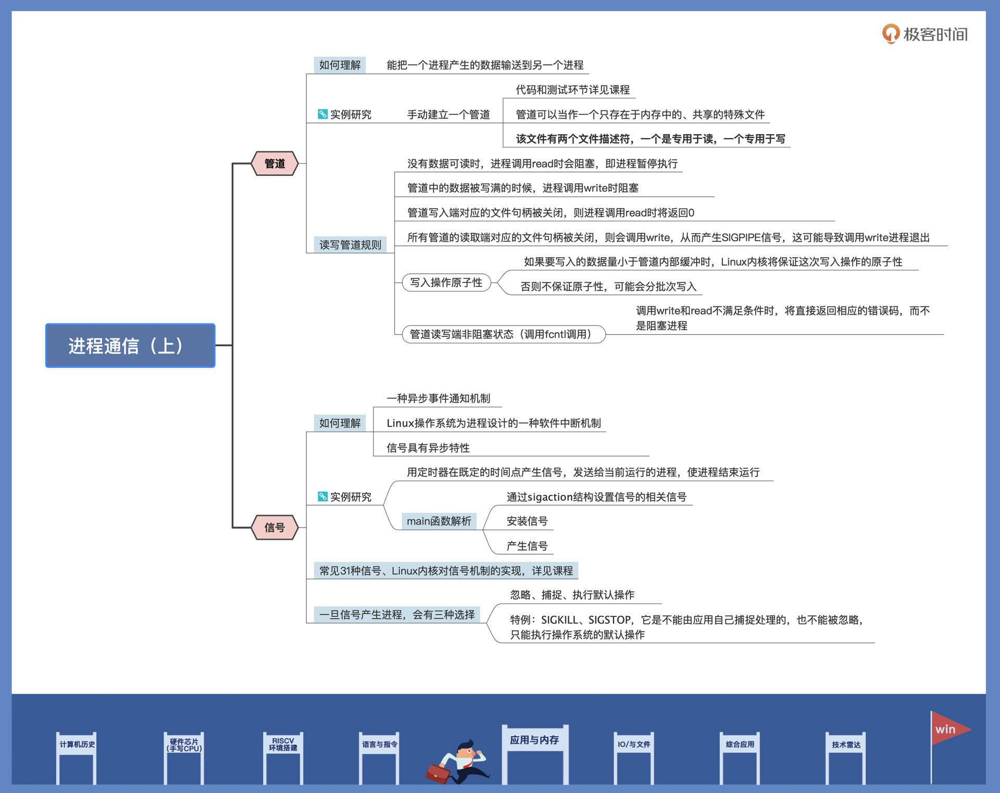

- 00 开篇词 练好基本功，优秀工程师成长第一步.md.html
- 01 CISC & RISC：从何而来，何至于此.md.html
- 02 RISC特性与发展：RISC-V凭什么成为“半导体行业的Linux”？.md.html
- 03 硬件语言筑基（一）：从硬件语言开启手写CPU之旅.md.html
- 04 硬件语言筑基（二）_ 代码是怎么生成具体电路的？.md.html
- 05 指令架构：RISC-V在CPU设计上到底有哪些优势？.md.html
- 06 手写CPU（一）：迷你CPU架构设计与取指令实现.md.html
- 07 手写CPU（二）：如何实现指令译码模块？.md.html
- 08 手写CPU（三）：如何实现指令执行模块？.md.html
- 09 手写CPU（四）：如何实现CPU流水线的访存阶段？.md.html
- 10 手写CPU（五）：CPU流水线的写回模块如何实现？.md.html
- 11 手写CPU（六）：如何让我们的CPU跑起来？.md.html
- 12 QEMU：支持RISC-V的QEMU如何构建？.md.html
- 13 小试牛刀：跑通RISC-V平台的Hello World程序.md.html
- 14 走进C语言：高级语言怎样抽象执行逻辑？.md.html
- 15 C与汇编：揭秘C语言编译器的“搬砖”日常.md.html
- 16 RISC-V指令精讲（一）：算术指令实现与调试.md.html
- 17 RISC-V指令精讲（二）：算术指令实现与调试.md.html
- 18 RISC-V指令精讲（三）：跳转指令实现与调试.md.html
- 19 RISC-V指令精讲（四）：跳转指令实现与调试.md.html
- 20 RISC-V指令精讲（五）：原子指令实现与调试.md.html
- 21 RISC-V指令精讲（六）：加载指令实现与调试.md.html
- 22 RISC-V指令精讲（七）：访存指令实现与调试.md.html
- 23 内存地址空间：程序中地址的三种产生方式.md.html
- 24 虚实结合：虚拟内存和物理内存.md.html
- 25 堆&栈：堆与栈的区别和应用.md.html
- 26 延迟分配：提高内存利用率的三种机制.md.html
- 27 应用内存管理：Linux的应用与内存管理.md.html
- 28 进程调度：应用为什么能并行执行？.md.html
- 29 应用间通信（一）：详解Linux进程IPC.md.html
- 30 应用间通信（二）：详解Linux进程IPC.md.html
- 31 外设通信：IO Cache与IO调度.md.html
- 32 IO管理：Linux如何管理多个外设？.md.html
- 33 lotop与lostat命令：聊聊命令背后的故事与工作原理.md.html
- 34 文件仓库：初识文件与文件系统.md.html
- 35 Linux文件系统（一）：Linux如何存放文件？.md.html
- 36 Linux文件系统（二）：Linux如何存放文件？.md.html
- 37 浏览器原理（一）：浏览器为什么要用多进程模型？.md.html
- 38 浏览器原理（二）：浏览器进程通信与网络渲染详解.md.html
- 39 源码解读：V8 执行 JS 代码的全过程.md.html
- 40 内功心法（一）：内核和后端通用的设计思想有哪些？.md.html
- 41 内功心法（二）：内核和后端通用的设计思想有哪些？.md.html
- 42 性能调优：性能调优工具eBPF和调优方法.md.html
- 先睹为快：迷你CPU项目效果演示.md.html
- 加餐01 云计算基础：自己动手搭建一款IAAS虚拟化平台.md.html
- 加餐02 学习攻略（一）：大数据&云计算，究竟怎么学？.md.html
- 加餐03 学习攻略（二）：大数据&云计算，究竟怎么学？.md.html
- 加餐04 谈谈容器云与和CaaS平台.md.html
- 加餐05 分布式微服务与智能SaaS.md.html
- 国庆策划01 知识挑战赛：检验一下学习成果吧！.md.html
- 国庆策划02 来自课代表的学习锦囊.md.html
- 国庆策划03 揭秘代码优化操作和栈保护机制.md.html
- 温故知新 思考题参考答案（一）.md.html
- 用户故事 我是怎样学习Verilog的？.md.html
- 结束语 心若有所向往，何惧道阻且长.md.html
- 捐赠
29 应用间通信（一）：详解Linux进程IPC
你好，我是LMOS。
通过前面的学习，我们对进程有了一定的认知，进程之间是独立的、隔离的，这种安排，使得应用程序之间绝对不可以互相“侵犯”各自的领地。
但是，应用程序之间有时需要互相通信，互相协作，才能完成相关的功能。这就不得不由操作系统介入，实现一种通信机制。在这种通信机制的监管之下，让应用程序之间实现通信。Linux实现了诸如管道、信号、消息队列、共享内存，这就是Linux进程IPC。我们用两节课的时间，分别讨论这些通信机制。这节课，我们先学习管道和信号。
课程的配套代码，你可以从这里下载。
管道
顾名思义，通常管道就是你家一端连接着水池，另一端连着水龙头的、能流通水的东西。在Linux中管道作为最古老的通信方式，它能把一个进程产生的数据输送到另一个进程。
比方说，我们在shell中输入“ls -al / | wc -l”命令来统计根目录下有多少文件和目录。该命令中的“|”就是让shell创建ls进程后建立一个管道，连接到wc进程，使用ls的输出经由管道输入给wc。由于ls输出的是文本行，一个目录或者一个文件就占用一行，wc通过统计文本行数就能知道有多少目录和文件。
下面我们手动建立一个管道，代码如下所示：
int main()
{
pid_t pid;
int rets;
int fd[2];
char r_buf[1024] = {0};
char w_buf[1024] = {0};
// 把字符串格式化写入w_buf数组中
sprintf(w_buf, "这是父进程 id = %d\n", getpid());
// 建立管道
if(pipe(fd) < 0)
{
perror("建立管道失败\n");
}
// 建立子进程
pid = fork();
if(pid > 0)
{
// 写入管道
write(fd[1], w_buf, strlen(w_buf));
// 等待子进程退出
wait(&rets);
}
else if(pid == 0)
{
// 新进程
printf("这是子进程 id = %d\n", getpid());
// 读取管道
read(fd[0], r_buf, strlen(w_buf));
printf("管道输出:%s\n", r_buf);
}
return 0;
}
上面的代码是一份代码，两个进程，父进程经过fork产生了子进程，子进程从25行代码开始运行。其中非常重要的是调用pipe函数，作用是建立一个管道。函数参数fd是文件句柄数组，其中fd[0]的句柄表示读端，而fd[1]句柄表示写端。- 我们立马来测试一下，如下图所示：

上图中，子进程通过管道获取了父进程写入的信息，可是为什么我们通过pipe和fork可以很轻松地在父子进程之间建立管道呢？
如果你把管道想象成一个只存在于内存中的、共享的特殊文件，就很好理解了。不过你要注意，该文件有两个文件描述符，一个是专用于读，一个专用于写。我再给你画一幅图帮你梳理逻辑，如下所示：

上图中pipe函数会使Linux在父进程中建立一个文件和两个file结构，分别用于读取和写入。调用fork之后，由于复制了父进程的数据结构，所以子进程也具备了这两个file结构，并且都指向同一个inode结构。inode结构在Linux中代表一个文件，这个inode会分配一些内存页面来缓存数据。但对于管道文件来说，这些页面中的数据不会写入到磁盘。
这也是为什么在应用程序中管道是用文件句柄索引，并使用文件读写函数来读写管道，因为管道本质上就是一个内存中的文件。
和读写文件一样，读写管道也有相应的规则：当管道中没有数据可读时，进程调用read时会阻塞，即进程暂停执行，一直等到管道有数据写入为止；当管道中的数据被写满的时候，进程调用write时阻塞，直到有其它进程从管道中读走数据。
如果所有管道写入端对应的文件句柄被关闭，则进程调用read时将返回0；如果所有管道的读取端对应的文件句柄被关闭，则会调用write，从而产生SIGPIPE信号，这可能导致调用write进程退出。这些规则由Linux内核维护，应用开发人员不用操心。
如果要写入的数据量小于管道内部缓冲时，Linux内核将保证这次写入操作的原子性。但是当要写入的数据量大于管道内部缓冲时，Linux内核将不再保证此次写入操作的原子性，可能会分批次写入。
这些读写规则，都是基于管道读写端是阻塞状态下的情况，你可以调用fcntl调用，把管道的读写端设置非阻塞状态。这样调用write和read不满足条件时，将直接返回相应的错误码，而不是阻塞进程。
管道是一种非常简单的通信机制，由于数据在其中像水一样，从水管的一端流动到另一端，故而得名管道。注意，管道只能从一端流向另一端，不能同时对流。之所以说管道简单，正是因为它是一种基于两个进程间的共享内存文件实现的，可以继承文件操作的api接口，这也符合Linux系统一切皆文件的设计思想。
信号
Linux信号，也是种古老的进程间通信方式，不过，这里的信号我们不能按照字面意思来理解。Linux信号是一种异步事件通知机制，类似于计算机底层的硬件中断。
我举个生活化的例子来帮助你理解。比如我们最熟悉的闹钟，闹钟会在既定的时间提醒你“该起床啦”。闹钟发出声音，类似于产生信号，你因为闹钟声音被叫醒，然后关掉闹钟并起床，开始一天的美好生活，这就类似于处理信号。
简单来说，信号是Linux操作系统为进程设计的一种软件中断机制，用来通知进程发生了异步事件。事件来源可以是另一个进程，这使得进程与进程之间可以互相发送信号；事件来源也可以是Linux内核本身，因为某些内部事件而给进程发送信号，通知进程发生了某个事件。
从进程执行的行为来说，信号能打断进程当前正在运行的代码，转而执行另一段代码。信号来临的时间和信号会不会来临，对于进程而言是不可预知的，这说明了信号的异步特性。
下面我们就来小试牛刀，用定时器在既定的时间点产生信号，发送给当前运行的进程，使进程结束运行。代码如下所示：
void handle_timer(int signum, siginfo_t *info, void *ucontext)
{
printf("handle_timer 信号码:%d\n", signum);
printf("进程:%d 退出!\n", getpid());
// 正常退出进程
exit(0);
return;
}
int main()
{
struct sigaction sig;
// 设置信号处理回调函数
sig.sa_sigaction = handle_timer;
sig.sa_flags = SA_SIGINFO;
// 安装定时器信号
sigaction(SIGALRM, &sig, NULL);
// 设置4秒后产生信号SIGALRM信号
alarm(4);
while(1)
{
;// 死循环防止进程退出
}
return 0;
}
上面的main函数中发生了很多事情，我们一步一步来梳理。- 第一步，main函数中通过sigaction结构设置相关信号，例如信号处理回调函数和一个信号标志。接着是第二步，安装信号，通过sigaction函数把信号信息传递给Linux内核，Linux内核会在这个进程上，根据信号信息安装好信号。
之后是第三步，产生信号，alarm函数会让Linux内核设置一个定时器，到了特定的时间点后，内核发现时间过期了就会给进程发出一个SIGALRM信号，由Linux内核查看该进程是否安装了信号处理函数，以及是否屏蔽了该信号。确定之后，Linux内核会保存进程当前上下文，然后构建一个执行信号处理函数的栈帧，让进程返回到信号处理函数运行。
我们来运行代码证明一下，如下图所示：

可以看到，程序运行起来等待4秒后，内核产生了SIGALRM信号，然后开始执行handle_timer函数。请注意，我们在main函数没有调用handle_timer函数，它是由内核异步调用的。在handle_timer函数中输出了信号码，然后就调用exit退出进程了。
信号码是什么呢？它就是一个整数，是一种信号的标识，代表某一种信号。SIGALRM定义为14。你可以用kill -l 命令查看Linux系统支持的全部信号。我把常用的一些信号列出来了，如下表所示：
-

上面都是Linux的标准信号，它们大多数来源于键盘输入、硬件故障、系统调用、应用程序自身的非法运算。一旦信号产生了，进程就会有三种选择：忽略、捕捉、执行默认操作。其实大多数应用开发者都采用忽略信号或者执行信号默认动作，这是一种“信号来了，我不管”的姿态。
一般信号的默认动作就是忽略，有一些信号的默认动作可能是终止进程、终止进程并保存内存信息、停止进程、恢复进程，你可以自己对照上表，看看具体是哪些信号。还有一些信号，比如SIGKILL、SIGSTOP，它是不能由应用自己捕捉处理的，也不能被忽略，只能执行操作系统的默认操作。为什么要这么规定呢？
我们想一想，如果SIGKILL、SIGSTOP信号能被捕捉和忽略，那么超级用户和系统自己就没有可靠的手段使进程终止或停止了。
好，现在我们已经了解了信号的基本知识，知道了信号来源、如何发出信号、以及捕获处理信号。可是我们还不知道要如何给其它进程发送信号，以及如何在信号中传送信息。
下面我们就把前面那个“闹钟”程序升一下级。代码如下所示：
static pid_t subid;
void handle_sigusr1(int signum, siginfo_t *info, void *ucontext)
{
printf("handle_sigusr1 信号码:%d\n", signum);
//判断是否有数据
if (ucontext != NULL)
{
//保存发送过来的信息
printf("传递过来的子进程ID:%d\n", info->si_int);
printf("发送信号的父进程ID:%d\n", info->si_pid);
// 接收数据
printf("对比传递过来的子进程ID:%d == Getpid:%d\n", info->si_value.sival_int, getpid());
}
// 退出进程
exit(0);
return;
}
int subprocmain()
{
struct sigaction sig;
// 设置信号处理函数
sig.sa_sigaction = handle_sigusr1;
sig.sa_flags = SA_SIGINFO;
// 安装信号
sigaction(SIGUSR1, &sig, NULL);
// 防止子进程退出
while (1)
{
pause(); // 进程输入睡眠，等待任一信号到来并唤醒进程
}
return 0;
}
void handle_timer(int signum, siginfo_t *info, void *ucontext)
{
printf("handle_timer 信号码:%d\n", signum);
union sigval value;
// 发送数据，也可以发送指针
value.sival_int = subid; // 子进程的id
// 调用sigqueue，向子进程发出SIGUSR1信号
sigqueue(value.sival_int, SIGUSR1, value);
return;
}
int main()
{
pid_t pid;
// 建立子进程
pid = fork();
if (pid > 0)
{
// 记录新建子进程的id
subid = pid;
struct sigaction sig;
// 设置信号处理函数
sig.sa_sigaction = handle_timer;
sig.sa_flags = SA_SIGINFO;
// 安装信号
sigaction(SIGALRM, &sig, NULL);
alarm(4);// 4秒后发出SIGALRM信号
while (1)
{
pause(); // 进程输入睡眠，等待任一信号到来并唤醒进程
}
}
else if (pid == 0)
{
// 新进程
subprocmain();
}
return 0;
}
上面的代码逻辑很简单：首先我们在主进程中调用fork建立一个子进程。接着子进程开始执行subprocmain函数，并在其中安装了SIGUSR1信号处理函数，让子进程进入睡眠。4秒钟后主进程产生了SIGALRM信号，并执行了其处理函数handle_timer，在该函数中调用sigqueue函数，向子进程发出SIGUSR1信号，同时传递了相关信息。最后，子进程执行handle_sigusr1函数处理了SIGUSR1信号，打印相应信息后退出。- 运行结果如下图所示：

上图输出的结果，正确地展示了两个信号的处理过程：第一个SIGALRM信号是Linux内核中的定时器产生；而第二个SIGUSR1信号是我们调用sigqueue函数手动产生的。
sigqueue的函数原型如下所示：
typedef union sigval {
int sival_int;
void *sival_ptr;
} sigval_t;
// pid 发送信号给哪个进程，就是哪个进程id
// sig 发送信号的信号码
// 附加value值（整数或指针）
// 函数成功返回0，失败返回-1
int sigqueue(pid_t pid, int sig, const union sigval value);
到这里，我们就可以总结一下。信号是Linux内核基于一些特定的事件，并且这些事件要让进程感知到，从而实现的一种内核与进程之间、进程与进程之间的异步通信机制。
我们画一幅图来简单了解一下Linux内核对信号机制的实现，如下所示：

无论是硬件事件还是系统调用触发信号，都会演变成设置进程数据结构task_struct中pending对应的位。这其中每个位对应一个信号，设置了pending中的位还不够，我们还要看一看，blocked中对应的位是不是也被设置了。
如果blocked中对应的位也被设置了，就不能触发信号（这是给信号提供一种阻塞策略，对于有些信号没有用，如SIGKILL、SIGSTOP等）；否则就会触发该位对应的action，根据其中的标志位查看是否捕获信号，进而调用其中sa_handler对应的函数。
那怎么判断信号最终是不是抵达了呢？这会表现为异步调用了进程某个函数。到这里，Linux提供的进程间异步通信——信号，我们就讲完了。
进程间的通信方法还有消息队列和共享内存，我们下节课再展开。
重点回顾
进程之间要协作，就要有进程间通信机制，Linux实现了多种通信机制，今天我们重点研究了管道和信号这两种机制。
管道能连接两个进程，一个进程的数据从管道的一端流向管道另一端的进程。如果管道空了则读进程休眠，管道满了则写进程休眠。这些同步手段由操作系统来完成，对用户是透明的。shell中常使用“|”在两个进程之间建立管道，让一个进程的输出数据，成为另一个进程的输入数据。
除了管道，信号也是Linux下经典的通信方式。信号比较特殊，它总是异步地打断进程，使得正在运行的进程转而去处理信号。信号来源硬件、系统，和其它进程。发送信号时，也能携带一些数据。
这节课的要点，我梳理了导图，供你参考。

思考题
请概述一下管道和信号这两种通信机制的不同。
期待你在留言区跟我交流互动，也希望你可以把这节课分享给更多朋友。
© 2019 - 2023 Liangliang Lee. Powered by gin and hexo-theme-book.